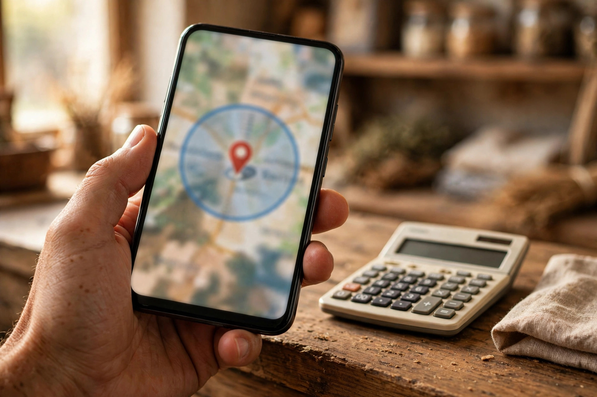

Karor Lal Eason does not trade inside a wall. Its customers arrive from surrounding villages every day, and its residents regularly travel to Layyah and Chowk Azam for shopping, services and work. That movement cuts both ways: businesses here can win customers from beyond the town, but they can also lose local customers to businesses in the bigger towns that appear better online. This article is about the first half of that contest: being found by customers in Layyah, Chowk Azam and the villages around you.
Zaheer Seo Expert is based in Layyah and has no office in Karor Lal Eason. We help Karor Lal Eason businesses widen their reach from Layyah, online and by phone, through our SEO services for Karor Lal Eason businesses. Being based in Layyah is useful here, because we see daily how customers in the bigger town search when they are deciding whether a trip to a smaller town business is worth it.
People Travel When There Is a Clear Reason
Nobody travels between towns on a guess. A customer from a village comes to Karor Lal Eason because a shop stocks what he needs, a service has a good name, or a price or skill is known to be better. A customer from Layyah or Chowk Azam will make the reverse trip for the same kinds of reasons: a particular trader, a trusted service, or something not easily available at home. Your online presence must state those reasons clearly, because the searching customer cannot see your shop from where he stands.
This means your Google profile and any website should answer the traveller's questions directly: what exactly do you offer, where exactly are you, when are you open, and how can he confirm before setting out. A phone number that is answered is a travelling customer's best friend.
How Google Decides Who Sees Your Business
Google shows local results based largely on relevance, distance and prominence. You cannot change geography: a searcher standing in central Layyah will usually be shown Layyah businesses first. But many searches include a place name, and those searches are your opening. When someone searches for a product or service with Karor Lal Eason named, or searches while planning a trip here, a complete and well reviewed profile in this town can win the click. The Google Business Profile optimization guide covers the profile work behind that visibility.
Your website widens the opening further. Pages that honestly describe what you offer to customers from surrounding areas, the villages you serve and the reasons people travel to you, can appear for searches that a map listing alone would not cover. Write these pages for real readers, naming your service area truthfully. Do not claim a branch or office in Layyah or Chowk Azam if you do not have one; claiming false locations damages trust and can damage your listings too.
Serve the Villages Around You Deliberately
The villages around Karor Lal Eason are your most natural wider market. Their residents already come here for the bazaar, for farm inputs, for clinics and for services the village cannot provide. Make their journey easy to plan: accurate pin and directions, hours that match reality, photos that help them recognise your premises on arrival, and reviews that mention helpful dealing. Where you genuinely deliver, collect from or travel to villages for your work, say so plainly on your profile and site, because that single fact decides many searches.
- State your real service area in words, without inventing locations.
- Keep directions simple and test them from the main approach roads.
- Encourage reviews from village customers as honestly as from town customers.
- Answer calls and messages promptly; a traveller is deciding now, not later.

Do Not Lose Your Own Town While Reaching Outward
Wider reach should never come at the cost of your home ground. The searches made inside Karor Lal Eason itself, and the near me searches of visitors already here, remain the foundation of most businesses. Keep your profile complete and your reviews answered, and your local position stays strong while your wider pages grow. Our article on SEO for Karor Lal Eason businesses explains how that local foundation is built.
There is also a defensive side. Businesses in Layyah and Chowk Azam with strong online presence are already appearing in front of your local customers. A Karor Lal Eason business with an equally clear presence, and the advantage of actually being here, can hold its own ground and take a fair share of the outward trade as well. Our local SEO and Google Business Profile service is designed to build both sides of that position together.
If your business is good enough that people already travel to you by word of mouth, it is good enough to be found by the wider circle searching online. Zaheer Seo Expert, working from Layyah, helps Karor Lal Eason businesses make that step, as set out on the Karor Lal Eason location page. Your market was never really only this town. Make sure your online presence knows it.
Frequently Asked Questions
Can a Karor Lal Eason business appear in searches from Layyah?
Sometimes, especially when the searcher names Karor Lal Eason or a specific service, and when your profile and website are complete and well reviewed. Distance still matters, so honest wider pages and a strong profile give you the best chance.
Should I claim a location in Layyah or Chowk Azam to get more customers?
No. Never claim a branch or office you do not have. Describe your real service area truthfully instead; false locations harm trust and can harm your Google listings.
How do village customers find my business?
Through map searches, town name searches and recommendations. An accurate pin, real hours, recognisable photos and honest reviews make their trip easy to plan and worth taking.
Where is Zaheer Seo Expert based while doing this work?
Zaheer Seo Expert is based in Layyah and has no office in Karor Lal Eason. Reach and SEO work for businesses there is handled online and by phone.
Want More Customers From Google?
Call 0327 7350830 or email seozaheer14@gmail.com. Zaheer Seo Expert, Layyah - Rajan Shah Road, Rana Nagar, Chak 116 TDA, Pakistan. Open 24 hours.
Get Your SEO Strategy →